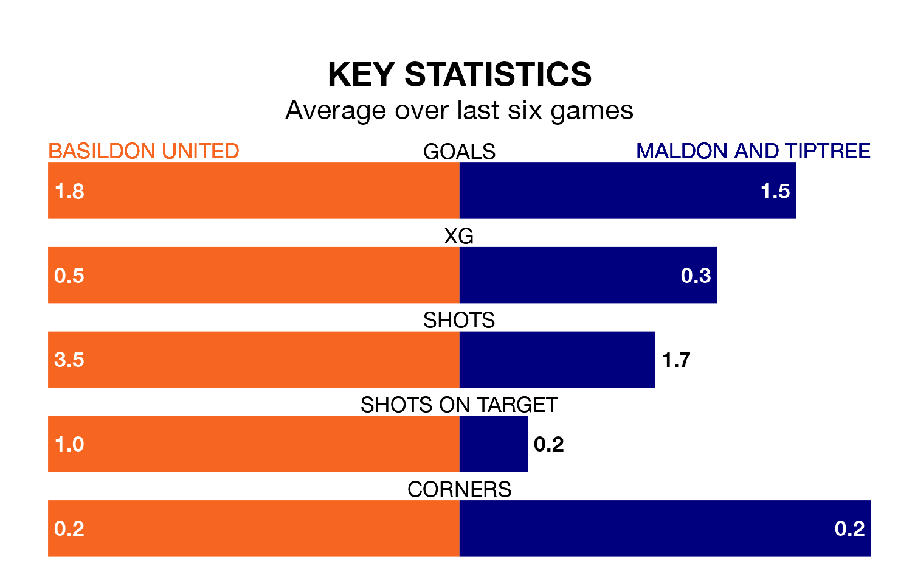

Tuesday's late match between Basildon United and Maldon and Tiptree promises to be one for the neutrals, as two of the Isthmian League Division One North's most free-scoring sides go head-to-head.
Ahead of the game, Basildon and the Jammers sit joint-fourth in the goal-scoring charts, with 45 goals apiece.
In the last five years, Basildon and Maldon & Tiptree have played each other on five occasions. Basildon won one of them and Maldon & Tiptree the other.
On average, Basildon scored 0.8 goals and the Jammers 1.6 in those matches.
Their last meeting was on October 10, when Maldon & Tiptree won 3-2 at home.
Basildon are seventh in the table after 22 games, of which they have won 12 and drawn three, earning 39 points.
Maldon & Tiptree are one place behind United in eighth, with 12 wins and three draws putting them on the same number of points.
The home team are in reasonable form in the Isthmian League Division One North, with four wins and two losses from their last six games.
And also with four wins and two losses over that period, the Jammers's form is identical – they have both taken 12 points from 18.
Basildon's last match was on February 3, a 4-0 win against Witham Town.
Maldon & Tiptree beat Enfield 1893 1-0 last time out, also on February 3.
Updated: 12:18 (UTC), 19/02/24